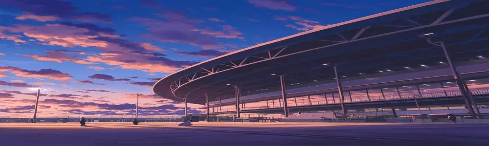

(Volume 2) Info page: D.S.O Coliseum
<image: DeviceRGB, width: 1000, height: 300, bpc: 8>
Simplified info section
The D.S.O Coliseum is a grand stadium that represents the Organisation's immense
and oppressive political power on Gaia. The Coliseum features an artificial city of
600m, and a total seating capacity of 990,000 persons. It is reinforced with several VX-
imbued materials for shock absorption, extreme durability and audience protection
from rogue void energy.
Full Coliseum Guide
General Dimensions
- Outer Diameter: 800 meters
- Outer Radius: 400 meters
- Total Area: 502,655 m²
- Total Artificial City Area: 282,743 m²
Materials
The stadium uses a combination of carbon, VX-tampered materials, and reinforced
steel-titanium lattice.
Outer Shell
The outer skeleton of the Coliseum uses
- Steel-titanium lattice, reinforced with VX-Carbon
- VX-Alonite, reinforced ALON with VX integration for durability and V₁ resistance
Lower Combat Zone (Artificial City)
- Constructed on top of reinforced cement
- Each layer of reinforced cement is imbued with dense VX bonds for increased
durability
- Extremely durable, but not invincible to direct attacks
Mid Barrier Zone (Solid space between the city and the audience)
- VX-steel alloy, used as a protective barrier between the city and the audience. It
is also capable of absorbing rogue Void energy due to the similar nature of VX
and V₁
Upper Barrier Zone (Glass panels that separate the audience and city)
- VX-Alonite is used as an extremely durable yet transparent material
- Deflects significant rogue V₁ particles
Extra Facts
- The D.S.O Coliseum (often referred to as a stadium) is the world's largest
Coliseum, dwarfing even large football fields by over 50 times
- Rogue V₁ particles have no effects on inanimate objects; however, they are
naturally capable of disturbing the spiritual energy of living beings due to their
multi-dimensional properties
- VX-Carbon is also known as VX-C